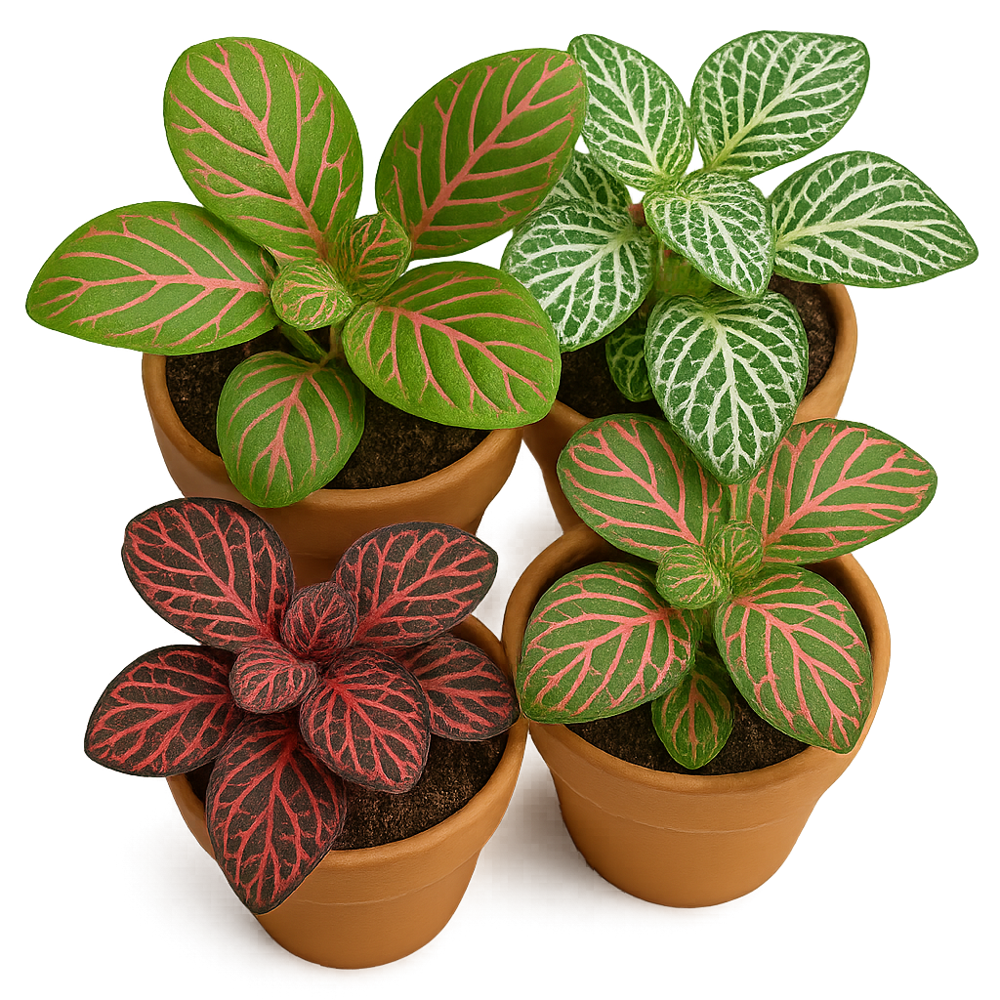

🌿 Fitônias. Seus lares mais verdes e bichanos seguros
Há plantas que passam despercebidas. Outras, como a fitônia, chegam com cores vibrantes, folhas texturizadas e uma presença silenciosa que transforma o ambiente. Conhecida por suas nervuras em tons de rosa, branco ou vermelho, a fitônia é uma escolha cada vez mais popular entre quem busca compor espaços acolhedores — e seguros para seus gatos.
Sim, ela é não tóxica para felinos. E essa talvez seja sua maior beleza: permitir que humanos e bichanos compartilhem o mesmo espaço sem receios. Em um mundo onde tantas plantas encantam, mas oferecem riscos, a fitônia entrega tudo: estética, segurança e personalidade.
Essa pequena notável — nativa das florestas tropicais da América do Sul — é perfeita para ambientes internos. Seu tamanho compacto e gosto por meia-sombra fazem dela uma companheira ideal para prateleiras, nichos e cantinhos de leitura. Além disso, ela adora umidade: banheiros iluminados e cozinhas bem ventiladas são o paraíso para suas raízes.
Mas atenção: fitônias têm sua personalidade. Detestam sol direto e desidratam com facilidade. Elas gostam de solo levemente úmido, sem excessos. Se você notar as folhas caídas ao fim do dia, não se assuste — é o jeito peculiar dela de reagir ao ambiente. Com um pouco de cuidado, ela revive, ressurge e segue embelezando seu lar.
Outro encanto está na variedade. Existem dezenas de tipos de fitônias: das miniaturas delicadas às mais dramáticas, com folhas largas e veios intensos. Algumas parecem ter sido desenhadas à mão. Outras lembram mosaicos naturais. Escolher uma só é difícil — e montar um mix pode ser ainda mais divertido.
Se você está buscando uma planta que seja ao mesmo tempo expressiva, compacta e compatível com seus bichanos, experimente a fitônia. Ela não exige muito, mas entrega beleza em dobro. E com sorte, seu gato vai se deitar ao lado dela, criando a cena perfeita: natureza, calma e afeto no mesmo plano.
🌿 Uma fitônia no aparador e um gato no sofá. Esse é o tipo de equilíbrio que a gente gosta.
← Voltar para o blog